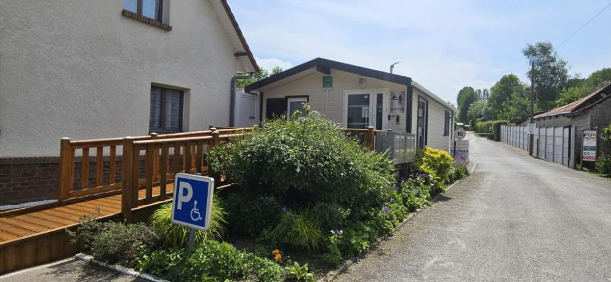

Aller au contenu
Camping des 3 Tilleuls
Fillièvres · Pays des 7 Vallées · ★★★
Langue
Français
English
Español
Deutsch
Italiano
Nederlands
Réserver
3 Tilleuls Conseil
Je vous aide à choisir
×
Bonjour ! Vous êtes combien, et plutôt mobil-home ou cabane ? Je vous trouve l'hébergement qui va bien.
3 Tilleuls Conseil
Assistant virtuel du camping
×
Votre question
Envoyer

Fermer